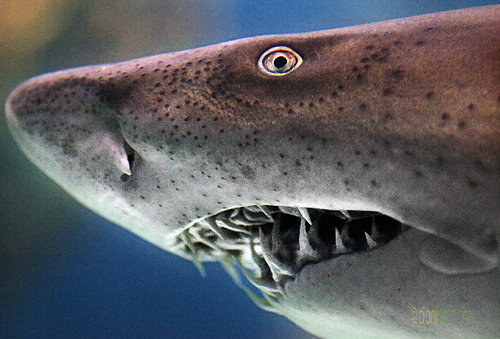
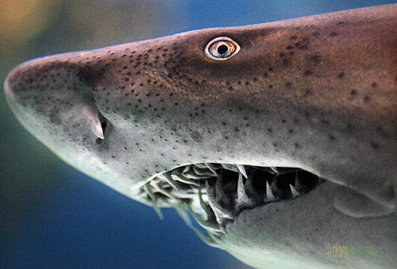

En este espacio, se encontrarán
diversas especies acuáticas criadas en cautividad conviviendo entre sí. Se podrán ver
tiburones, manta rayas, anguilas, peces globo, peces escorpión, entre otras criaturas. Para su visualización, será
necesario hacer un recorrido viendo los espacios de cada una de las especies. El espacio de los tiburones
será de forma de túnel de cristal.El resto de cabinas, incluirán las especies antes mencionadas
(a excepción de los tiburones) y especies de agua dulce como: cangrejos de río, salmones, truchas,...
 
